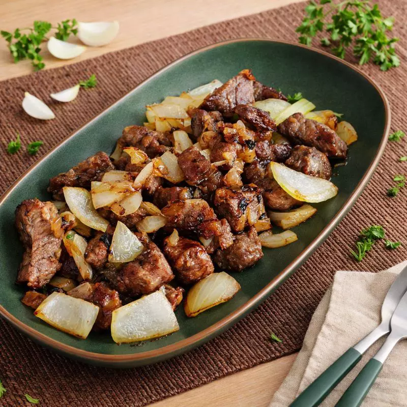

Seja bem-vindo ao Raízes do Nordeste!
O Raízes do Nordeste é um restaurante que valoriza a culinária nordestina, oferecendo pratos autênticos e deliciosos que refletem a rica cultura da região. Venha experimentar o verdadeiro sabor do Nordeste!
O autêntico sabor do Nordeste, trazido diretamente para o seu prato. Nossos pratos são preparados com ingredientes frescos e com os melhores temperos. Monte já o seu pedido e acumule seus pontos em nosso programa de fidelidade.
Ver Cardápio Programa de Fidelidade